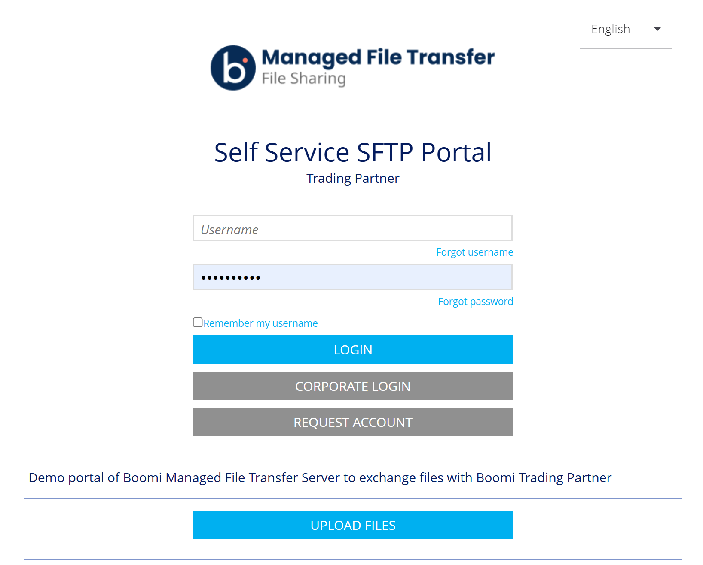
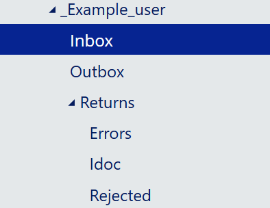
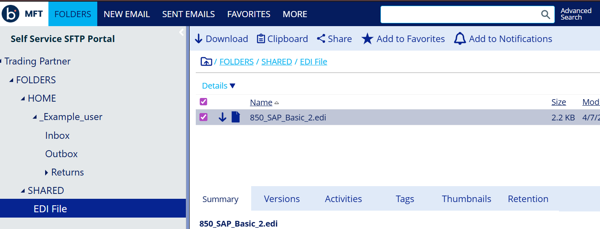
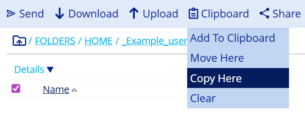
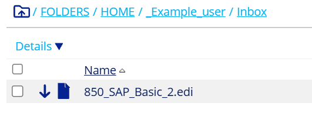

Explore the File Sharing Portal
Get familiar with Boomi MFT's File Sharing web portal — the hosted SFTP server that trading partners use to drop off and pick up EDI files.
What Is the File Sharing Portal?
Boomi MFT's File Sharing module provides a fully hosted SFTP server that your trading partners can connect to — either through a standard SFTP client (FileZilla, WinSCP, command line) or directly through a browser-based web portal. There is nothing for partners to install or maintain on their end.
Every user gets an isolated home folder — partners interact only with their own space and cannot see other users' data.
By default, the platform creates a basic folder set for each new user. However, for this lab the administrator has used the User Home Folder Customization feature to pre-provision a specific folder structure that matches the EDI workflow — Inbox, Outbox, and a Returns folder with subfolders for each output type. This is configured using a JSON template applied at the account level, for example:
[
{ "name": "Inbox" },
{ "name": "Outbox" },
{ "name": "Returns", "subfolders": [
{ "name": "IDoc" },
{ "name": "Rejected" },
{ "name": "Errors" }
]}
]The platform supports regular folders, My Documents (type: 3), and My Dropbox (type: 4) folder types. This customisation means every workshop participant starts with an identical, purpose-built folder structure rather than the platform default.
What You'll Do
In this exercise you'll act as the trading partner. You'll log into the web portal, explore the pre-built folder structure, and copy a sample EDI 850 purchase order file from the shared library into your personal Inbox. This simulates a partner uploading a file — which is what Boomi Integration will later pick up and process in Exercise 2.
Lab URLs
Lab Access
us-ftpsbx-02.thruinc.net · Port 22sftp-trading-partner-demo.boomi.com\your.email@address.comLog In & Explore the Portal
Log into the File Sharing web portal and familiarise yourself with the folder structure before copying any files.
-
1
Navigate to https://sftp-trading-partner-demo.boomi.com/ and log in with the credentials you received by email.

-
2
Once logged in, expand the folder tree under your username in the left panel. You will see a set of folders that have been pre-created for this workshop:
- Inbox — where you (as the trading partner) will drop files for Boomi Integration to pick up
- Outbox — where Boomi will deliver files back to you, such as EDI 997 functional acknowledgements
- Returns — where processed output files are written, with subfolders for different document types (IDoc, Rejected, Errors)
- SHARED/EDI File — a shared read-only folder containing sample EDI files for this lab

-
3
Expand the Returns folder and take note of the available subfolders — you'll reference these paths when configuring SFTP connections in Exercise 2.

-
4
Expand SHARED > EDI File and click on the 850 file to select it. This is a sample EDI 850 purchase order — the document type you will process in Exercise 2.

Copy the EDI File to Your Inbox
Use the portal's clipboard feature to copy the sample EDI 850 file from the shared library into your personal Inbox, ready for Boomi Integration to pick up.
The web portal uses a clipboard mechanism to move files between folders — similar to copy and paste on a desktop. You first add a file to the clipboard from its source location, then navigate to the destination and paste it there.
-
1
Navigate to SHARED > EDI File and select the 850 file. Click the Clipboard button to add the file to the clipboard.

-
2
The file icon will change shade to indicate it has been added to the clipboard.

-
3
Navigate to the Inbox folder under your username. Click the Clipboard button again to paste the file into your Inbox.

-
4
Confirm the file now appears in your Inbox.

Keep this portal tab open — you'll need to copy your folder paths from here when configuring SFTP connections in the next exercise.
Continue to Exercise 2